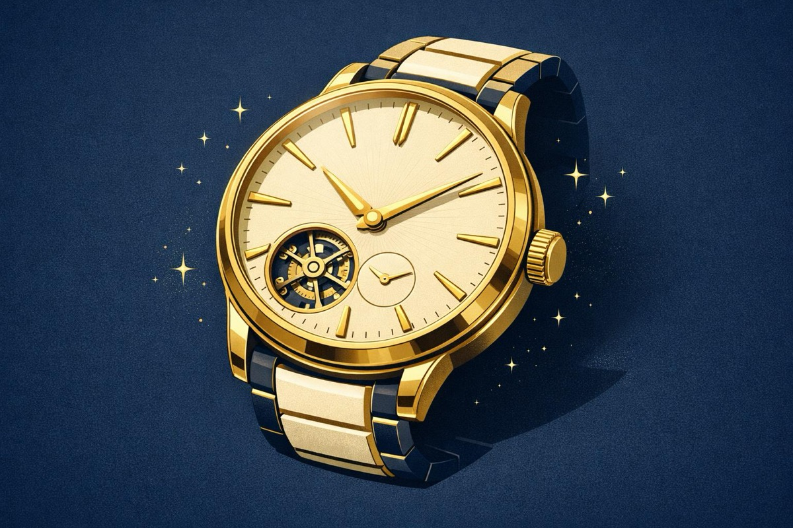

グランドセイコー、385万円値上げでも売れる理由
最大44%・385万円の値上げを打ち出したグランドセイコー。原価転嫁ではなく「世界のラグジュアリーと並ぶ座標」への再ポジショニングこそが、この値決めの正体です。
値上げすると顧客が離れるという前提で価格を据え置いている
価格そのものがブランドの価値を物語る状態になっている
何が起きたか
グランドセイコーは2026年6月9日、ヘリテージコレクションの18Kゴールドモデル3品番を7月6日から値上げすると発表しました。最上位のSLGA027は880万円から1265万円へ、実に385万円・約44%の引き上げです。日本経済新聞は、株高による富裕層の旺盛な消費を背景に、高級ブランドが強気の値上げに動いていると報じています。
顧客は誰で、何に困っているか
このモデルの顧客は、国内外の富裕層と時計愛好家です。彼らが困っているのは「時刻がわからないこと」ではありません。数百万円を投じるに足る、確かな物語と希少性を備えた一本が見つからないことです。スイス勢の高級時計は選択肢として確立していますが、「日本のものづくりの頂点を、世界に通用する格で持ちたい」という潜在ニーズには、長らく応える製品が限られていました。大谷翔平選手とのグローバルパートナーシップで海外での認知が急上昇していると報じられており、この潜在ニーズは世界規模に広がりつつあると考えられます。
付加価値の構造──機能は同じでも「座標」が変わった
注目すべきは、値上げの対象が製品としては何も変わっていない点です。スプリングドライブ・キャリバー9RA2も、44GSケースの造形も従来のまま。変わったのは顧客の頭の中にある「比較対象」です。
機能で言えば、独自機構による高精度と18Kの素材価値。便益で言えば、長く使える正確さと仕上げの美しさ。しかし1000万円超の値決めを支えるのは、その先にある価値──「世界のラグジュアリーウオッチと同じ土俵で語られる日本製を所有する誇り」です。金価格の上昇という原価要因はあるにせよ、4割超の改定幅は、海外ラグジュアリーとの価格バランスを意識した再ポジショニングと考えられます。同じ機能でも、比較される相手が変われば、顧客が感じる価値の天井は動く。ここが本件の核心です。
値決めへの接続
この値上げは、コスト転嫁でもシェア拡大でもなく、「価格そのものをブランド価値の一部にする」タイプの値決めです。ラグジュアリーの世界では、価格は品質のシグナルであり、安さはむしろ価値を毀損します。株高で富裕層の資産効果が働く今というタイミングを捉え、需要が強いうちに座標を引き上げる。値上げによって顧客が減るのではなく、値上げによって「持つ意味」が強くなる構造です。
もちろん、これは高級時計だから成立する話ではありません。日本企業の多くは、原価が上がった分だけを恐る恐る転嫁する「守りの値上げ」にとどまっています。しかし顧客が本当に比較しているのは原価ではなく、代替品と物語です。自社の商品が顧客の頭の中でどの棚に置かれているかを定義し直すことは、業種を問わず可能な「攻めの値決め」だと考えられます。
今日の問い
あなたの会社の商品は、誰と比較されて値段を決められているでしょうか。比較対象を一段上に引き上げたとき、顧客が感じる価値の天井はどこまで動くか──原価表ではなく、顧客の頭の中の「座標」から値決めを考え直してみてください。